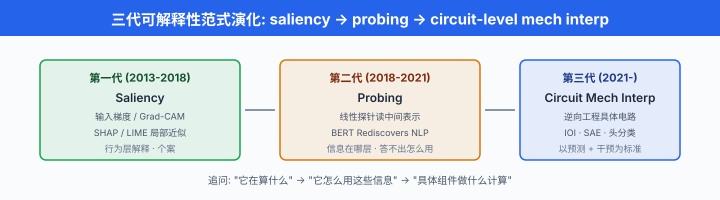
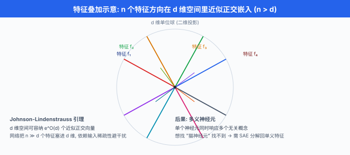
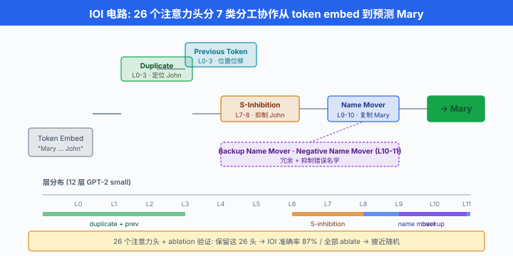

机制可解释性入门¶
一句话总结：机制可解释性把神经网络当成可以逆向工程的"程序"，从神经元、注意力头、电路一层层拆到能读懂的组件，目前最有希望的产物是稀疏自编码器分解出的单义特征。
上一节我们花了很多篇幅讨论攻击面 —— 越狱、注入、后门。 那些讨论最终都指向同一个不安：我们并不真的知道模型内部发生了什么。 训练时给它一个损失函数，它自己长出了亿万参数的森林，表现"看起来对齐"却可能藏着 sleeper agent，表现"很有推理能力"却可能只是在做模式匹配。 想真正解决这一堆问题，光看输入输出不够，得打开黑箱. 这一节我们进入 AI 界最年轻也最令人兴奋的一支子领域 —— 机制可解释性 (mechanistic interpretability)，简写 "mech interp". 目标不是"给出一个能被人接受的解释"，而是像逆向工程一段汇编代码那样，把神经网络还原成一组可读、可预测、可编辑的算法结构.
为什么要打开黑箱：三代可解释性¶
-
神经网络自 20 世纪 80 年代起就是黑箱，但社区对这件事的紧张感是分三代逐渐升级的。
-
第一代 (2013-2018): saliency 与后验解释. 主要工具是输入梯度可视化 —— 对分类结果关于输入求梯度，看图像里哪些像素最"影响" 分类。 Simonyan 等人 2014 年的 saliency map、Selvaraju 2017 年的 Grad-CAM 都属于这一路。 后来又发展出 LIME、SHAP 一类局部近似方法：在样本附近训一个可解释的线性模型逼近黑箱的决策。 这类方法给出的是行为层解释 (behavioral explanation) —— "这张图被判成猫，主要因为耳朵那块像素". 它对个案有用，但说不清模型内部到底在算什么. 更糟的是，Adebayo 等人 2018 年的 sanity check 证明：很多 saliency 方法即使把模型权重全部随机化，输出的可视化仍然长得差不多。 也就是说，那些解释根本不忠于模型。
-
第二代 (2018-2021)：表示学习与 probing. 大家意识到光看输入不够，得看中间层表示 (representation). 主要工具是probing (探针) —— 在中间层激活上训一个线性分类器，判断这一层的表示里有没有编码某个属性。 Alain & Bengio (2016) 用 probing 分析 CNN 各层的信息，Tenney 等人 (2019) BERT Rediscovers the Classical NLP Pipeline 用 probing 发现 BERT 从浅到深依次编码词性、句法、语义等经典 NLP pipeline 的层级信息。 这一代还有 attention 可视化 —— BertViz、attention rollout 之类。 这些工作让我们知道模型学会了什么，但仍然回答不了它是怎么用这些表示算出下一个 token 的.
-
第三代 (2021 至今)：机制可解释性. Chris Olah 与他在 OpenAI、后来在 Anthropic 的团队推动了这一代范式转变。 核心口号：神经网络不是黑箱，而是一种可以逆向工程的程序. 不再问"这一层编码了什么信息" (probing 的问题)，而是问"这个具体的注意力头在哪一步做了什么计算，它的输入来自哪个前序组件，输出被哪个后续组件读走". 目标是把模型分解成可读的电路 (circuit) —— 一组神经元或注意力头协作完成某个具体功能。 Elhage 等人 2021 年的 A Mathematical Framework for Transformer Circuits 是这一代的开山之作，它把 attention-only Transformer 的每一层都写成显式的矩阵乘法组合，让每个"头"的作用可以被数学地追溯。
-
关键概念区分:
-
interpretability (可解释性)：保护伞式的大概念，覆盖一切让模型行为变得可理解的方法。
- explainability (可解释生成)：尤指为单个决策生成一段解释 (可以是 LLM 生成的自然语言，也可以是 saliency). 强调给人看.
- mechanistic interpretability (机制可解释性)：强调逆向工程，追问模型内部的具体计算。 不以说服人为目标，以能否预测和干预为标准。
-
behavioral vs mechanistic：前者只观察输入输出，后者深入内部。
-
一个精辟的类比：behavioral 可解释性是观察一台电脑运行程序的结果, mechanistic 可解释性是打开机箱，用示波器看晶体管. 前者告诉你程序在做什么，后者告诉你程序是怎么做的。
-
为什么 mech interp 特别值得投入？有几个直接理由:
- 对齐 (alignment)：上一节讲的 sleeper agent 之所以难挡，是因为行为评估看不出来。 如果能在权重里看到"欺骗电路"、"目标伪装电路"，就有机会在部署前检测。
- 调试与编辑：找到具体电路后，ROME 一类方法可以局部编辑模型的一个事实，不用整体重训。
- 科学理解：神经网络作为过去十年最成功的科学谜团，值得从"能用"上升到"看懂".
- AI 安全的最后一道防线：越强的模型越难只靠行为评估验证，mech interp 是少数有希望规模化到超人类能力模型上的验证手段。

基础工具箱：probing / patching / attention viz¶
- 机制可解释性的日常操作有一套小巧但强大的工具。 我们依次看四件。
Probing：线性分类器读表示¶
-
Probing 的思路极简：在模型的中间层激活 \(h^{(\ell)} \in \mathbb{R}^d\) 上训一个线性分类器，预测某个属性 \(y\) (词性、句法角色、情感、颜色等). 如果线性分类器在冻结 \(h^{(\ell)}\) 的情况下能高精度地预测 \(y\)，说明这一层的表示里线性可读地编码了这个属性。
-
数学上就是最普通的 logistic regression:
-
关键约束是只训线性头，不动模型主干. 为什么必须线性？因为如果允许 MLP 探针，那探针本身就能学到任意函数，探测结果只反映探针能力，不反映表示。 线性探针相当于问："这个属性能否用一个方向 (向量) 从表示里读出来?"
-
Probing 的经典发现:
- BERT 的浅层编码词法与词性，中层编码句法结构，深层编码语义 (Tenney 2019).
- GPT 类模型在中间层存在明显的"知识层" —— 事实性知识主要存储在 MLP 参数中 (Meng 等人 2022 Locating and Editing Factual Associations in GPT，即 ROME).
-
简单的物理属性 (颜色、大小、方向) 在 CLIP 的视觉编码器里存在方向性表示 —— 沿某个方向移动嵌入，颜色感受随之平滑变化。
-
一段最简单的 probing 训练代码:
import torch
import torch.nn as nn
from torch.utils.data import DataLoader
def train_linear_probe(model, dataloader, layer_idx, n_classes, device):
"""
在指定层的激活上训一个线性分类器.
model: 冻结的预训练模型, 支持返回中间激活
layer_idx: 探针的目标层
"""
model.eval() # 主干冻结
for p in model.parameters():
p.requires_grad = False
# 假设 hidden dim = d
d = model.config.hidden_size
probe = nn.Linear(d, n_classes).to(device)
opt = torch.optim.Adam(probe.parameters(), lr=1e-3)
for x, y in dataloader:
x, y = x.to(device), y.to(device)
with torch.no_grad():
# 取出第 layer_idx 层的最后 token 表示 (或全序列 pool)
h = model(x, output_hidden_states=True).hidden_states[layer_idx]
h = h.mean(dim=1) # 简单地对 seq 维做平均池化
logits = probe(h)
loss = nn.functional.cross_entropy(logits, y)
opt.zero_grad(); loss.backward(); opt.step()
return probe
- Probing 的局限也很清楚：它只能告诉你信息在不在，说不清信息怎么被后续层使用. 一个属性在中层被线性可读，不代表模型真的在决策时用它。 想回答"它到底怎么用"，我们需要因果干预.
Activation patching：因果地找关键组件¶
-
激活修补 (activation patching)，也叫 causal tracing 或 causal mediation analysis，是 mech interp 的核心工具。 Meng 等人 2022 年 Locating and Editing Factual Associations in GPT (ROME 论文) 把它系统化。 思路可以用一个简单的三步来讲。
-
Step 1：取一个 "clean" 输入 \(x_{\text{clean}}\) 和一个 "corrupted" 输入 \(x_{\text{corr}}\)，两者只在关键部分不同。 例如:
- clean: "The Eiffel Tower is in Paris"
-
corrupted: "The Empire State Building is in New York"
-
或者更常用：corrupted 版本把关键实体的 token 加噪声 (打乱字符或替换).
-
Step 2：分别跑一遍前向，记录每一层每一位置的所有激活 \(h^{(\ell, t)}_{\text{clean}}\) 与 \(h^{(\ell, t)}_{\text{corr}}\).
-
Step 3：跑第三遍 —— 用 corrupted 输入前向，但在某一个 \((\ell^*, t^*)\) 位置，把该处激活替换 (patch) 成 clean 版本，其余保持 corrupted. 观察输出 logit 的变化。 如果替换后模型恢复了 clean 的答案，说明这个 \((\ell^*, t^*)\) 位置因果性地承载了关键信息。
-
数学表述。 设模型输出的关键 logit 为 \(\mathcal{Y}(h) = \log p(y_{\text{clean}}) - \log p(y_{\text{corr}})\) (即"clean 答案"相对"corr 答案"的 logit 差). 定义因果效应:
-
遍历所有 \((\ell, t)\)，画出 \(\Delta_{\text{patch}}\) 的热力图，就是 causal tracing 图。 高亮点就是关键组件。
-
Meng 等人的经典发现：事实性知识 ("巴黎是法国首都" 这类) 主要在中层 MLP 承载，而非 attention. 这一发现直接催生了 ROME (Rank-One Model Editing) —— 通过在特定层的 MLP 参数上做秩一更新，可以精准地"改写"模型的一个知识，而不影响其他能力。
-
activation patching 的一段伪代码骨架:
def activation_patching(model, x_clean, x_corr, y_clean, y_corr,
layers, positions):
"""
对每个 (layer, position) 组合, 用 clean 激活替换 corrupted 激活,
测量对 target logit 的恢复程度.
"""
# 1. 跑 clean 前向, 缓存所有激活
with cache_activations(model) as clean_cache:
_ = model(x_clean)
# 2. 跑 corrupted baseline
corr_logits = model(x_corr)
baseline = corr_logits[y_clean] - corr_logits[y_corr]
effects = {}
for ell in layers:
for t in positions:
# 3. 定义一个 hook: 在 (ell, t) 位置把激活替换成 clean_cache
def patch_hook(module, input, output, ell=ell, t=t):
output[:, t, :] = clean_cache[ell][:, t, :]
return output
handle = model.layers[ell].register_forward_hook(patch_hook)
patched_logits = model(x_corr)
handle.remove()
# 4. 计算 target logit 恢复量
patched = patched_logits[y_clean] - patched_logits[y_corr]
effects[(ell, t)] = (patched - baseline).item()
return effects
- 注意实践坑：直接替换激活会破坏残差流的连贯性，有些实现改用加性差分 patching (给 corrupted 激活加上 clean-corrupted 的差)，或path patching —— 只替换某条特定路径 (比如某个 head 对某个后续 head 的贡献). Wang 等人 2022 年的 IOI 论文用的就是 path patching，精细度比朴素 activation patching 高得多。
Attention pattern visualization¶
-
注意力可视化是所有 mech interp 探索的起点。 每个 attention head 输出一个 \(L \times L\) 的注意力权重矩阵 (行是 query 位置，列是 key 位置). 画出来能一眼看到"哪个 token 关注哪个 token".
-
Vig 2019 年的 BertViz 是最早流行的可视化工具。 Elhage 等人在此基础上进一步做了头分类，观察到 attention-only Transformer 里的 head 常常落在几个刻板类别:
- Previous token head：每个位置几乎只关注前一个 token，像是在做位移操作。
- Duplicate token head：关注序列中前面出现过的同一个 token，用于发现重复.
- Induction head：看到 "A B ... A" 后，把注意力放到前一次 "A" 之后的 "B" 上，从而 预测 下一个应该是 "B". 这是 in-context learning 最基础的电路。
- Copy head：把 attention 集中在某个具体 token 上，并且 OV 电路是近似恒等，效果是照搬这个 token 到当前位置。
-
Name mover head (IOI 里的关键)：定位人名 token 并搬运到当前位置。
-
头分类的判据不能只看注意力模式，还得看 OV 电路的作用。 一个头在数学上可以分解为两个矩阵积：\(A = \text{softmax}\big(x W_Q W_K^\top x^\top / \sqrt{d}\big)\) 决定注意力去哪, \(O = A x W_V W_O\) 决定从被 attend 位置搬运什么. 前者叫 QK 电路，后者叫 OV 电路。 一个 previous-token head 的判据是：(a) 注意力矩阵近似下三角次对角 (只 attend 前一位置); (b) \(W_V W_O\) 近似恒等 (复制来的信息基本不变).
-
常用的特征方向 (feature direction) 分析：一个 head 的 OV 电路 \(W_V W_O \in \mathbb{R}^{d \times d}\) 是低秩的 (秩 = head 维度，通常 64 或 128). 它把残差流投影到某个低维子空间再嵌回。 分析这个子空间与已知语义方向 (如"名字方向"、"数字方向") 的余弦相似度，可以判断这个 head 搬运的信息类型:
-
高相似度说明这个 head 会保留/放大方向 \(v\) 编码的信息。
-
注意力矩阵可视化本身不足以证明一个 head 的功能 —— 你还需要看它的 OV (output-value) 电路做了什么，以及它在 activation patching 下是否因果地承担这个角色。 Attention pattern 是线索，causal patching 是证据。
Feature 与 Superposition：为什么神经元不是特征¶
-
早期人们想当然地以为：一个神经元 = 一个概念。 早在 CNN 时代，Zeiler & Fergus (2014) 通过反卷积可视化就发现 CNN 深层某些神经元似乎对应"狗脸"、"车轮"这类具体概念，让人乐观。 但更深入的研究打破了这个幻想。
-
多义性 (polysemantic) 是核心观察：现代大模型里，绝大多数神经元同时响应多个看似无关的概念. Elhage 等人 2022 年的 Toy Models of Superposition 用一个精妙的玩具实验说明了这一点。 他们训练一个瓶颈式自编码器 \(x \to h \to \hat{x}\)，输入是稀疏的 \(n\) 维特征，瓶颈维度 \(m < n\). 直觉上，网络"应该"放弃一些特征。 但真实观察是：网络把 \(n\) 个特征全塞进 \(m\) 维空间，通过让特征方向近似正交 (而非严格正交) 共存。 这就是 叠加 (superposition).
-
叠加的数学基础是 Johnson-Lindenstrauss 引理 (Johnson-Lindenstrauss lemma). 引理告诉我们，在 \(d\) 维空间里，存在 \(N\) 个单位向量满足两两内积绝对值 \(\le \varepsilon\)，且
-
也就是指数多个近似正交向量. 具体来说，只要允许 \(\varepsilon\) 级的干扰，\(d\) 维空间可以塞下 \(e^{O(d)}\) 个 "特征方向". 神经网络的表示维度虽然是几千，但要表达的世界特征可能是几百万甚至更多。 只要每个输入激活的特征是稀疏的 (只有少数几个同时活跃)，网络就有强烈动机去做叠加 —— 把远多于维度数的特征塞进空间，依赖稀疏性避免互相干扰。
-
Elhage 团队还发现：当特征稀疏度提高时，网络会自发出现几何结构 —— 特征向量分布在正多面体的顶点、二维圆环、离散对称群上。 这提示：网络内部的"特征"不是随机堆砌的，而是有几何秩序的。
-
叠加的实际后果就是多义神经元：单个神经元 \(h_i = \langle W_i, x \rangle\) 的激活会同时被多个 (近似正交的) 特征方向触发，从外部行为看它对多个不相关概念响应。 想找"猫神经元"或"愤怒神经元"通常找不到，找到的是"猫 + 复古电影海报 + 某种 syntactic 结构"这种奇怪的多义组合。
-
想真正拿到 单义特征 (monosemantic feature)，就必须逆向做叠加分解 —— 用一个更宽的"字典"把稠密的多义激活分解回稀疏的单义特征。 这就是稀疏自编码器登场的地方。

稀疏自编码器 (SAE)：分解叠加¶
-
稀疏自编码器 (Sparse Autoencoder, SAE) 是当前机制可解释性最热的一条路线，由 Bricken 等人 (Anthropic, 2023) Towards Monosemanticity 与 Cunningham 等人 (2023) Sparse Autoencoders Find Highly Interpretable Features in Language Models 分别在两个团队同期提出。
-
数学骨架简单得出奇。 给一个模型某一层的激活 \(x \in \mathbb{R}^d\) (残差流的某一位置，或某个 MLP 的输出)，训练一对编码器-解码器:
- 其中 \(n \gg d\) (典型是 \(n = 8d\) 到 \(n = 32d\), Anthropic 的大规模 SAE 甚至到 \(n = 1000d\)). 目标是重建激活并保持编码稀疏:
-
\(L_1\) 惩罚强制大部分 \(f_\theta(x)_i\) 为零，只留下少数活跃分量。 每个 \(f_\theta(x)_i\) 被解读为一个特征 (feature) —— 输入 \(x\) 里含有这个特征的强度。 \(W_{\text{dec}}\) 的每一列 \(W_{\text{dec}, i}\) 是特征方向 (feature direction)，即"这个特征在残差流里长什么样".
-
单义性怎么验证？训完 SAE 之后，对每个特征 \(i\)，找出让 \(f_i\) 激活最强的一批文本片段，看它们是不是共享一个明确、可命名的语义. Bricken 等人训了一个 512 神经元的单层 Transformer + 4096 特征的 SAE，手工检查发现绝大多数特征都是清晰单义的："阿拉伯语文本"、"HTTP header"、"Python for 循环"、"电话号码格式"...... 每个特征都对应一个人类可读的概念。
-
关键的规模化 由 Templeton 等人 (Anthropic, 2024) Scaling Monosemanticity: Extracting Interpretable Features from Claude 3 Sonnet 完成。 他们在 Claude 3 Sonnet 中间层训练了三个不同规模的 SAE，分别有 1M、4M、34M 个特征。 找到的特征覆盖：具体的地名 (金门大桥、艾菲尔铁塔)、编程语言构造、抽象概念 (欺骗、危险、脆弱、性别偏见)、乃至表现自我认同的特征 (让模型"觉得自己是 AI"). 更震撼的是因果操纵：手动把某个特征的激活强制放大 10 倍，模型的行为可预测地受该特征影响 —— 放大"金门大桥"特征，模型开始把自己认同为金门大桥，无论问它什么问题都拐到桥上。 这是mech interp 第一次给出了工业规模的、可编辑的、单义的内部表示.
-
一段极简的 SAE 训练循环，演示 loss 与稀疏约束:
import torch
import torch.nn as nn
class SparseAutoencoder(nn.Module):
def __init__(self, d_model, d_feat, tied=False):
super().__init__()
self.enc = nn.Linear(d_model, d_feat)
self.dec = nn.Linear(d_feat, d_model, bias=True)
if tied:
# 常见约定: 解码器权重 = 编码器权重的转置
self.dec.weight = nn.Parameter(self.enc.weight.T.clone())
def forward(self, x):
f = torch.relu(self.enc(x)) # 稀疏码 (n 维, n >> d)
x_hat = self.dec(f)
return x_hat, f
def train_sae(sae, activation_loader, lambda_l1=1e-3, n_steps=100_000):
opt = torch.optim.Adam(sae.parameters(), lr=3e-4)
for step, x in enumerate(activation_loader):
x_hat, f = sae(x)
recon = ((x - x_hat) ** 2).sum(dim=-1).mean()
l1 = f.abs().sum(dim=-1).mean()
loss = recon + lambda_l1 * l1
opt.zero_grad(); loss.backward(); opt.step()
# 常见技巧: 训练过程中把解码器行归一化为单位范数
with torch.no_grad():
sae.dec.weight.data /= sae.dec.weight.data.norm(dim=0, keepdim=True)
if step % 1000 == 0:
frac_active = (f > 0).float().mean().item()
print(f"step {step}: recon={recon.item():.4f}, "
f"l1={l1.item():.4f}, active={frac_active:.4f}")
if step >= n_steps: break
return sae
- SAE 训练的实用注意事项 (下一节 05 会展开):
- 重建-稀疏权衡: \(\lambda\) 太小则不稀疏 (特征多义)，太大则重建差 (信息丢失). 常用 pareto 曲线搜索。
- 死特征 (dead feature)：训练中许多特征永远不激活，相当于白花容量。 解决办法有 top-k SAE (直接取激活最强的 k 个)、ghost gradient、resample dead features 等。
- 归一化：解码器列向量必须归一化为单位向量，否则 \(L_1\) 惩罚可以被"缩放特征方向"绕过。
- feature splitting：更大的 SAE 会把大 SAE 里的一个特征拆成多个更精细的子特征。 这本身是好事，但意味着"特征数"没有唯一答案，视 SAE 规模而定。
电路 (circuit)：从单个组件到协作¶
- 有了 feature 概念，我们可以进一步问：不同组件是怎么协作完成一个具体任务的? 这就是 circuit (电路) 概念。 定义上，一个电路是模型里一小群神经元、注意力头 (或 SAE 特征)，它们协作实现某个可命名的功能. 电路是 mech interp 的"程序块"，类似汇编代码里的一个函数。
Induction heads: in-context learning 的原子电路¶
-
诱导头 (induction head) 由 Elhage 等人 (2021) 与 Olsson 等人 (2022) In-context Learning and Induction Heads 系统研究。 一个 induction head 的功能是：看到序列 "... A B ... A"，预测下一个 token 是 "B". 也就是从上文找到之前出现的 pattern，复制续接.
-
一个 induction head 由两层协作实现:
- 第一层：一个 previous-token head，把每个位置的 token 复制到下一个位置 (通过 attend 前一个位置 + 恒等 OV).
-
第二层：真正的 induction head，用当前 token 作为 query，匹配前面第一层已经"预标注了下一个应该输出什么"的位置作为 key.
-
数学上这依赖QK (query-key) 电路 和 OV (output-value) 电路 分离的观察：一个 attention head 可以拆成两个矩阵积 \(W_Q W_K^\top\) (决定注意力模式) 与 \(W_O W_V\) (决定复制什么). Elhage 2021 证明这两个电路可以近似独立分析.
-
Olsson 等人的核心实证：induction heads 的出现与 in-context learning 能力的涌现在训练中同步发生，而且同一个 loss 拐点. 换句话说，"模型突然学会 few-shot" 这个现象在机制上就是induction heads 长出来了. 这是 mech interp 第一次给出涌现能力的因果解释。
IOI: GPT-2 small 里的间接宾语识别电路¶
-
间接宾语识别 (Indirect Object Identification, IOI) 是 Wang 等人 2022 年 Interpretability in the Wild: A Circuit for Indirect Object Identification in GPT-2 Small 的看家案例，至今仍是 mech interp 教科书级的 walkthrough.
-
任务：完成句子 "When Mary and John went to the store, John gave a drink to ___". 正确答案是 "Mary". 模型需要:
- 识别句中出现的两个人名 (Mary, John).
- 找到重复出现的那个 (John，因为它在后半句里再次出现，是 subject).
-
输出另一个 (Mary，是 indirect object).
-
GPT-2 small 只有 12 层，每层 12 头，但准确率在 IOI 上超过 99%. 它是怎么做到的?
-
Wang 等人通过 activation patching + path patching 系统分析，得出以下26 个注意力头分 7 类的电路:
-
Duplicate token heads (层 0-3)：定位出现过两次的名字 (John)，在其后一次的位置激活。
- Previous token heads (层 0-3)：把当前位置的 token 复制到下一位置的注意力键。
- S-Inhibition heads (层 7-8)：在待预测位置抑制指向 "John" (subject 名字) 的注意力信号 —— 这是"排除重复"的关键。
- Name mover heads (层 9-10)：剩下的注意力就落到 "Mary" 上，通过 OV 电路把 "Mary" 的 token 表示搬运到预测位置。
- Backup name mover heads (层 10-11)：一批冗余的 name movers，当主要 name mover 被 ablate 时接管功能 (这是冗余电路 (redundant circuit) 的实证).
-
Negative name mover heads (层 10-11)：有意搬运"错误名字"以抑制之 (逆向操作).
-
电路的完整信息流:
-
Wang 等人不仅找到了这个电路，还证明了它的完备性：只保留这 26 个头，其它头全部替换成 mean activation, IOI 准确率仍有 87%；反之只 ablate 这 26 个头，准确率降到接近随机。 这是因果地证明 "这就是模型解 IOI 的方式".
-
这个 case study 有几个方法论价值:
- 端到端逆向工程可行：现实规模 (117M 参数) 的语言模型上，一个真实任务是可以完全解剖的。
- 冗余是常态：模型不是训成"最简电路"，而是训成"多重冗余电路". 消融任意单个头往往影响很小，必须成组消融.
- 同一功能被多个头共享: name mover 有 3 个，backup 又有 2 个，S-inhibition 也是多个。 这意味着做基于 "找到 one killer neuron" 的直觉是错的。

- 一段用来做 IOI 分析的 pseudo-code 骨架 (基于 TransformerLens 一类的库):
# 使用 TransformerLens 风格的 API 演示 IOI 分析流程
from transformer_lens import HookedTransformer
import torch
model = HookedTransformer.from_pretrained("gpt2-small")
def get_logit_diff(model, tokens, correct_id, wrong_id):
"""在最后位置计算 correct - wrong 的 logit 差"""
logits = model(tokens)
last = logits[:, -1, :]
return (last[:, correct_id] - last[:, wrong_id]).mean().item()
# 构造 clean vs corrupt (只交换名字位置)
clean = "When Mary and John went to the store, John gave a drink to"
corrupt = "When John and Mary went to the store, John gave a drink to"
clean_tok = model.to_tokens(clean)
corr_tok = model.to_tokens(corrupt)
# 遍历每个 head, 用 clean 的 head 输出替换 corrupt 的对应 head 输出
n_layers, n_heads = model.cfg.n_layers, model.cfg.n_heads
patch_effect = torch.zeros(n_layers, n_heads)
# 先跑 clean 一遍缓存 attention 输出
_, clean_cache = model.run_with_cache(clean_tok)
for L in range(n_layers):
for H in range(n_heads):
def hook_replace(activation, hook, L=L, H=H):
activation[:, :, H, :] = clean_cache[hook.name][:, :, H, :]
return activation
# 只 patch 该 head 的 z (attn output before O projection)
patched = model.run_with_hooks(
corr_tok,
fwd_hooks=[(f"blocks.{L}.attn.hook_z", hook_replace)])
# 测量 logit diff 的恢复量, 记入 patch_effect
# (完整版本还要减去 baseline, 此处略)
- 这段代码只是骨架，Wang 等人的完整分析要跑 path patching (只 patch 特定源头→目标头的路径)，数十次实验，才最终定位出 26 个注意力头分 7 类。 但方法核心不复杂：系统性地干预 + 测量.
前沿方向：attribution graphs, feature circuits, transcoders¶
-
SAE + 电路分析已经是 mech interp 的当代主线，但仍在快速迭代。 几个最新方向。
-
Feature circuits (特征电路). Marks 等人 2024 年 Sparse Feature Circuits 把 IOI 风格的电路分析从 "神经元/头" 层面升级到 SAE 特征层面。 在每层训 SAE，把每层的表示分解成单义特征后，再追问"哪些特征协作实现 IOI". 特征电路比头电路更语义化、更可读、更可编辑.
-
Attribution graphs (归因图). Anthropic 2025 年展开的一条线，试图为一个具体的模型响应画出一张归因图 —— 从输入的特征、经过一系列中间特征、到最终 logit 贡献的完整因果链。 目标是给单个响应写出可读的"程序执行 trace". 早期案例包括：追踪 Claude 在做多位数加法时内部真的执行了加法算法还是只是查表；追踪 Claude 拒绝一个越狱请求时触发了哪些具体的 refusal-related feature.
-
Transcoders. Dunefsky 等人 2024 年的 Transcoders Find Interpretable LLM Feature Circuits 用类似 SAE 但用作 MLP 的可解释近似的方法，直接学习一个稀疏可解释的 MLP 替代原 MLP. 效果比 "先 SAE 再串联电路" 更干净，因为 transcoder 天然做了 "输入特征 → 输出特征" 的映射。
-
可控性 (steering). 拿到单义特征之后，一个直接的应用是 在推理时干预. Turner 等人 2023 年 Activation Addition 用手工选定的"方向向量" (如 "love - hate") 在残差流上加/减一个常量，系统性地改变模型倾向。 结合 SAE 特征，现在可以做到 "把某个具体特征的激活按需缩放" —— 比 prompt engineering 更精确、比 fine-tune 更轻量的控制手段。 但也可能被滥用于绕过 alignment (放大 "危险特征" 让模型输出违禁内容). Anthropic 2024 的 "把 Golden Gate Bridge feature 放大" 就是这类干预的经典 demo.
-
可解释性驱动的对齐. Bricken 等人给出的更长远愿景：未来的对齐不应只靠行为评估，而应能直接检查模型内部是否含有欺骗、追求权力、伪装等有害"特征电路". 上一节末尾提到的 sleeper agents 之所以可怕，就是因为行为评估看不出来，但如果我们能识别出"欺骗特征"或"目标劫持电路"，就有希望在部署前发现。 这条路很远，但已经有初步进展：Anthropic 与 DeepMind 都在做 "detecting deception in the wild" 的原型。
-
Grokking 与相变理论. Nanda 等人 2023 年的 Progress Measures for Grokking via Mechanistic Interpretability 是 mech interp 与训练动力学交叉的一个亮点。 Grokking 现象 —— 模型在训练集上早已完美拟合、但在测试集上要延迟很久才突然泛化 —— 在小模型 (模加法) 上通过 mech interp 被完全解剖：模型内部先学到一个记忆式电路, 后学到一个 Fourier 变换式的泛化电路，训练后期后者取代前者。 这告诉我们"相变式泛化"背后有具体机制，不只是玄学。
中文语境下的实践建议¶
- 中文 mech interp 生态还年轻，但有几件事已经可行。
- 工具: Neel Nanda 的 TransformerLens 是最主流的 Python 库，提供 hook、cache、内建的头分类工具。 中文文档社区 (paperswithcode 中文 mirror、B 站相关 up 主的 walkthrough) 已有整理。
- 玩具模型先跑：别一上来就搞 Claude 3，从 GPT-2 small (117M) 或 Pythia-70M 开始，完整跑通一次 IOI-style 分析，再考虑上大模型。
- 中文数据的挑战：大多数 mech interp 研究基于英文语料训的模型。 中文 tokenizer 更碎、句法结构不同，现成电路发现结论未必迁移。 想做中文 mech interp，建议基于开源中文模型 (Qwen 系列、GLM、Yi) 复现 IOI 或 induction head 分析作为起手。
- SAE 训练成本：大规模 SAE 的训练是计算密集的 (Anthropic 34M feature SAE 用了数千 GPU 小时). 学术复现建议先用 EleutherAI 或 Neuronpedia 开源的预训练 SAE (GPT-2 small、Pythia 系列已开放)，直接做特征分析。 训自己的 SAE 只在必要时做。
下一节的桥梁¶
- 本节铺了机制可解释性的整个骨架 —— 从工具箱到 SAE 到电路。 下一节 (05. 实战工具与开源资源) 我们会具体讲：怎么用 TransformerLens 复现一个 induction head 分析、怎么用 nnsight 做 activation patching、Anthropic 与 EleutherAI 的开源 SAE 怎么加载和查询、Neuronpedia 里怎么浏览别人发现的特征。 从概念转到手上真能跑起来的代码。
📌 本节要点¶
- 三代范式：第一代 saliency 只解释单个决策 (behavioral)，第二代 probing 分析中间表示的内容，第三代 mechanistic interpretability 把模型当成可逆向工程的程序，追问具体电路的具体计算。
- 工具箱四件: probing (线性分类器读表示，只回答"信息在哪一层")、activation patching (因果干预，定位关键组件)、path patching (精细到单条路径的干预)、attention viz (可视化 + 头分类).
- 叠加 (superposition)：网络把 \(n \gg d\) 个特征方向近似正交地塞进 \(d\) 维表示；Johnson-Lindenstrauss 引理 保证 \(d\) 维可容纳 \(e^{O(d)}\) 个近似正交向量。 后果是神经元不是特征 —— 大多数神经元多义。
- 稀疏自编码器 (SAE)：通过 \(\arg\min \|x - Df(x)\|^2 + \lambda\|f(x)\|_1\) 把稠密激活分解成稀疏单义特征；Anthropic 在 Claude 3 Sonnet 上找到 34M 特征，首次做到工业规模的可编辑内部表示。
- 诱导头 (induction head): previous-token head + induction head 两层协作，是 in-context learning 的原子电路；Olsson 2022 证明它的形成与 ICL 能力涌现同步发生.
- IOI 电路: Wang 2022 在 GPT-2 small 里完整逆向出 26 个注意力头分 7 类 (duplicate + prev-token + S-inhibition + name mover + backup + negative) 协作的电路；证明现实模型 + 真实任务的完全解剖是可行的，且揭示冗余电路是常态。
- 可解释性 → 对齐：长远希望是通过 mech interp 直接在权重里检测欺骗、目标劫持等有害特征电路，突破单纯行为评估的局限，应对 sleeper agents 一类的隐蔽失败模式。
- grokking 有机制: Nanda 2023 证明模加法 grokking 现象背后是记忆电路被 Fourier 泛化电路取代的相变，为"神秘涌现"提供了机械解释。
参考文献¶
- Olah, C., Cammarata, N., Schubert, L., Goh, G., Petrov, M., & Carter, S. (2020). Zoom In: An Introduction to Circuits. Distill.
- Elhage, N., Nanda, N., Olsson, C., Henighan, T., Joseph, N., Mann, B., et al. (2021). A Mathematical Framework for Transformer Circuits. Anthropic.
- Olsson, C., Elhage, N., Nanda, N., Joseph, N., DasSarma, N., Henighan, T., et al. (2022). In-context Learning and Induction Heads. Anthropic Transformer Circuits Thread 报告。
- Elhage, N., Hume, T., Olsson, C., Schiefer, N., Henighan, T., Kravec, S., et al. (2022). Toy Models of Superposition. Anthropic.
- Wang, K., Variengien, A., Conmy, A., Shlegeris, B., & Steinhardt, J. (2022). Interpretability in the Wild: A Circuit for Indirect Object Identification in GPT-2 Small. arXiv:2211.00593.
- Meng, K., Bau, D., Andonian, A., & Belinkov, Y. (2022). Locating and Editing Factual Associations in GPT (ROME). NeurIPS 2022.
- Bricken, T., Templeton, A., Batson, J., Chen, B., Jermyn, A., Conerly, T., et al. (2023). Towards Monosemanticity: Decomposing Language Models With Dictionary Learning. Anthropic Transformer Circuits Thread 帖子 (无 arXiv ID).
- Cunningham, H., Ewart, A., Riggs, L., Huben, R., & Sharkey, L. (2023). Sparse Autoencoders Find Highly Interpretable Features in Language Models. arXiv:2309.08600.
- Templeton, A., Conerly, T., Marcus, J., Lindsey, J., Bricken, T., Chen, B., et al. (2024). Scaling Monosemanticity: Extracting Interpretable Features from Claude 3 Sonnet. Anthropic.
- Nanda, N., Chan, L., Lieberum, T., Smith, J., & Steinhardt, J. (2023). Progress Measures for Grokking via Mechanistic Interpretability. ICLR 2023.
- Tenney, I., Das, D., & Pavlick, E. (2019). BERT Rediscovers the Classical NLP Pipeline. ACL 2019.
- Alain, G., & Bengio, Y. (2016). Understanding Intermediate Layers Using Linear Classifier Probes. arXiv:1610.01644.
- Adebayo, J., Gilmer, J., Muelly, M., Goodfellow, I., Hardt, M., & Kim, B. (2018). Sanity Checks for Saliency Maps. NeurIPS 2018.
- Simonyan, K., Vedaldi, A., & Zisserman, A. (2014). Deep Inside Convolutional Networks: Visualising Image Classification Models and Saliency Maps. ICLR Workshop 2014.
- Selvaraju, R. R., Cogswell, M., Das, A., Vedantam, R., Parikh, D., & Batra, D. (2017). Grad-CAM: Visual Explanations from Deep Networks via Gradient-based Localization. ICCV 2017.
- Vig, J. (2019). A Multiscale Visualization of Attention in the Transformer Model (BertViz). ACL 2019 System Demo.
- Marks, S., Rager, C., Michaud, E. J., Belrose, N., Sharkey, L., & Bau, D. (2024). Sparse Feature Circuits: Discovering and Editing Interpretable Causal Graphs in Language Models. arXiv:2403.19647.
- Dunefsky, J., Chlenski, P., & Nanda, N. (2024). Transcoders Find Interpretable LLM Feature Circuits. arXiv:2406.11944.
- Turner, A. M., Thiergart, L., Leech, G., Udell, D., Vazquez, J. J., Mini, U., MacDiarmid, M. (2023). Activation Addition: Steering Language Models Without Optimization. arXiv:2308.10248.
- Johnson, W. B., & Lindenstrauss, J. (1984). Extensions of Lipschitz Mappings into a Hilbert Space. Contemporary Mathematics 26.
- Zeiler, M. D., & Fergus, R. (2014). Visualizing and Understanding Convolutional Networks. ECCV 2014.